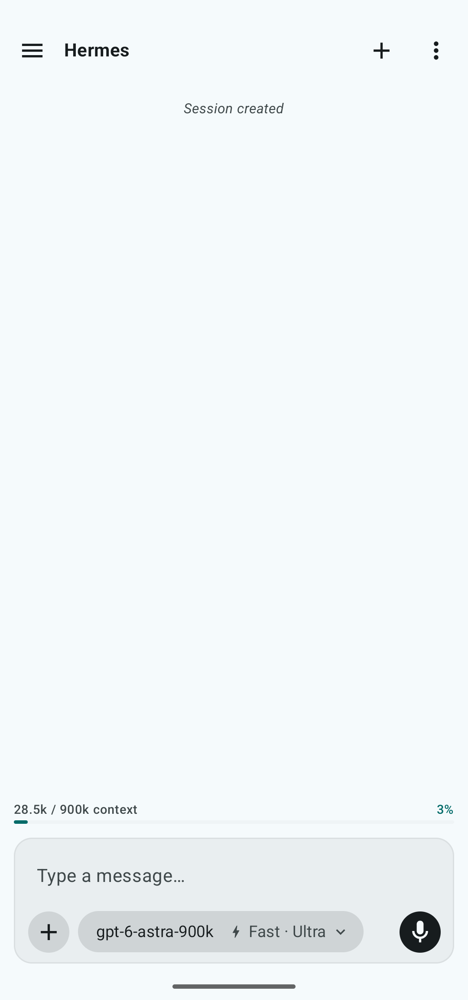
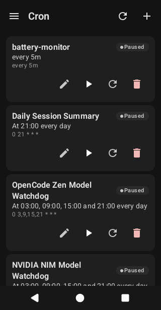
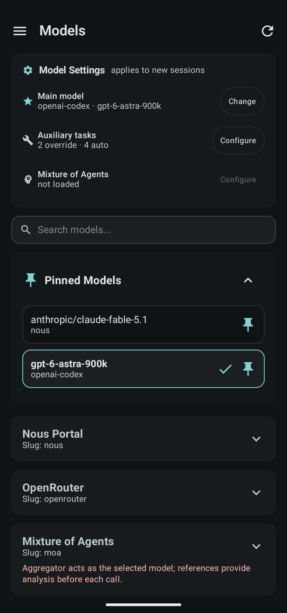
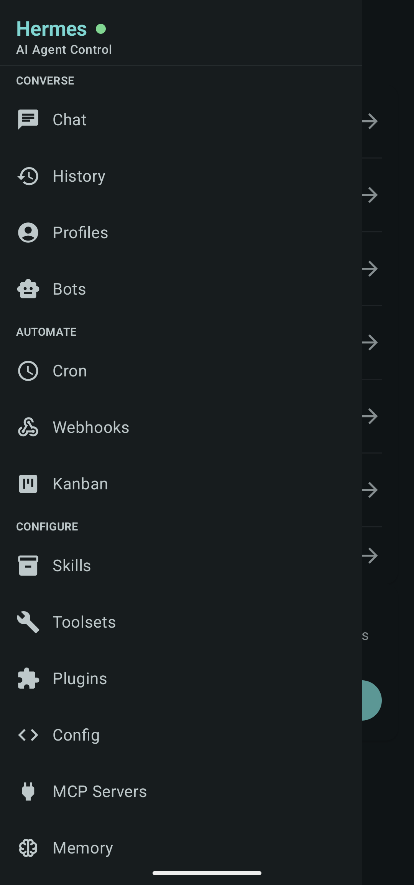

Sia — client de contrôle pour un agent Hermes auto-hébergé
Kotlin, Jetpack Compose, Room, WebSocket JSON-RPC + REST, CI Gradle. Fork d'upstream hermes-mobile, durci et vérifié sur appareil. Un rework est en cours (voir plus bas).
Le problème
Je fais tourner mon propre agent Hermes sur un serveur maison. Le client Android d'origine ne collait pas à ce que je veux depuis un téléphone : une entrée vocale prévisible, un historique de chat qui survit au hors-ligne, un onboarding qui suppose que Tailscale et Hermes tournent déjà chez vous.
Je l'ai donc forké, renommé Sia (com.sia.hermescontrol), et durci.
Ce que j'ai construit
- Une app Jetpack Compose, 30+ écrans : chat, gestion des crons, choix du modèle, sidebars, réglages. Room garde l'historique, donc les conversations passées restent accessibles hors-ligne.
- Transport : WebSocket JSON-RPC vers la gateway live, REST pour le CRUD (mailbox, cron, pairs).
- La voix, la partie dure. Le moteur STT embarqué dead-lockait sur mes appareils sans aucun message d'erreur ; j'ai documenté deux tentatives A/B avec les signatures de blocage, puis retiré le moteur. Le design final : push-to-talk, transcription Whisper côté serveur (small, en-only), le texte remplit la zone de saisie — jamais envoyé automatiquement. Trois gestes, chacun calibré : appui de 150 ms ou plus ajoute, swipe vers le haut envoie, glissement à gauche annule.
- Release : CI Gradle, APK signés, métadonnées F-Droid.
- 2 495 tests passants (unitaires + instrumentation) au dernier run complet.
Captures d'écran




Rework, en cours
L'itération suivante repositionne Sia comme « votre client Tailscale pour Hermes » : un assistant d'onboarding qui enchaîne clé API Tailscale, découverte des nœuds, première connexion — au lieu de faire recopier les réglages à la main. Le lien de fork est assumé ouvertement.